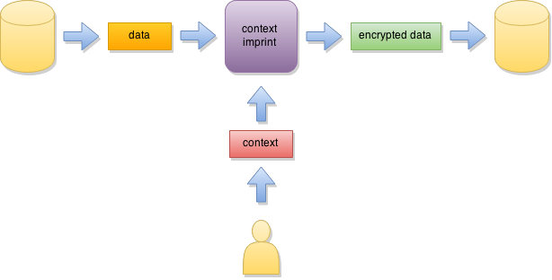

Secure Сell
Secure Сell is a high-level cryptographic service, aimed to protect arbitrary data being stored in various types of storages (like databases, filesystem files, document archives, cloud storage etc). It provides a simple way to secure your data using strong encryption and data authentication mechanisms, with easy-to-use interfaces for broad range of use-cases.
Implementing secure storage is often constrained by various practical matters - ability to store keys, existence of length-sensitive code bound to database structure, requirements to preserve structure. To cover a broader range of usage scenarios and provide highest security level for systems with such constraints, we've designed several types of interfaces and implementations of secure data container, Secure Cell. They slightly differ in overall security level and ease of use: more complicated and slightly less secure ones can cover more constrained environments though. Interfaces below are prioritized by our preference, which takes only security and ease of use into account.
Secure Cell seal mode
This is the most secure and easy way to protect stored data. All one have to do is to provide some secret (password, secret key etc) to the API and the data itself. The data will be encrypted and an authentication tag will be appended to the data, so the size of the encrypted data will be larger than original. Also, users of this object mode can bind the data to some context (for example, database row number), so decryption of the data with incorrect context will fail (even if the secret will be correct). This allows establishing cryptographically secure associations between protected data and its context. In example with database row numbers, it will prevent encrypted data from tampering by attacker (for example, forcing the system to accept wrong hash to check credentials by displacing row numbers or primary key values).

Secure Cell token protect mode
This object mode is designed for cases when underlying storage constraints do not allow the size of the data to grow (so Secure cell seal described above cannot be used), however the user has access to a different storage location (ex. another table in the database) where he can store needed security parameters. The Secure Cell object puts authentication tag and other auxiliary information (aka data token) to a separate buffer, so user can store it elsewhere, while keeping the original encrypted data size. The same token has to be provided along with the correct secret for data to be decrypted successfully. Since the same security parameters are used (just stored in a different location) this object mode has same security level as Secure cell seal but requires slightly more effort from the user. Also, user has the ability to bind the data to its context as before.

Secure Cell context imprint mode
This object mode is for environments where storage constraints do not allow the size of the data to grow and there is no auxiliary storage available. Secure Cell context imprint relies on the user to provide the data context along with the secret to protect the information. Also, no authentication tag is computed or verified. This means the integrity of the data is not enforced, so the overall security level is slightly lower than preceding two cases.
NOTE: To ensure highest security level possible user has to supply different context for each encryption invocation of the object for the same secret.
